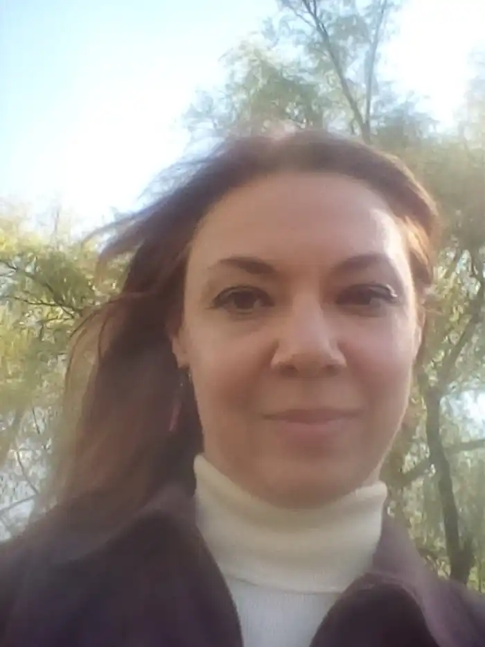

Обиденна Марія (1979 р.н.) — письменниця та перекладачка, народилась у стародавньому місті Чернігові розташованому на півночі України.
Своє перше оповідання, хоча й досить наївне, написала у дев'ятирічному віці. З цього все і почалося — з любові до письма та читання. Почала придумувати свої історії. Згодом, короткі оповідання були об'єднані у збірку "У Лісі". Для того щоб допомогти дитині, відчути реальне досягнення, батьки зібрали її кращі твори та зшили їх разом у вигляді книги. Обкладинку зробити з картону та прикрасили ілюстраціями. Так з'явилась перша книга письменниці. З дитинства займалася музикою та грою на фортепіано. Цікавилась історією рідного краю.
Вступила до Чернігівського національного педагогічного університету ім. Т.Г. Шевченка на спеціальність історія, англійська мова та література. У Київському міжнародному університеті (КиМУ) отримала ступінь магістра зі спеціальності англійська філологія. Переїхала жити до міста Києва. Під час навчання в університеті та магістратурі писала короткі оповідання, які увійшли в збірку "Чарівна скринька". Заснувала письменницькі студії "Український есей" для авторів-початківців. За час роботи Студії відвідали десятки авторів, було проведено ряд заходів, які значно активізували процес розвитку письменницьких навичок. У 2020 році, у видавництві "Український письменник" НСПУ вийшла книжка "Жанр есе. Як писати есе на різні теми". Книга-посібник "Жанр есе. Як писати есе на різні теми" була представлена на численних міжнародних книжкових виставках, в тому числі і на книжковому фестивалі Книжковий Арсенал — 2020. Книга номінувалась в конкурсі "Найкращий книжковий дизайн — 2020" та отримала схвальні відгуки художників та ілюстраторів. Мета книжки — це систематизація та поглиблення знань з літературної майстерності. Запропонований матеріал охоплює різні види есе та етапи роботи над твором у жанрі есе. Книжку поділено на розділи. Кожний розділ містить теоретичний матеріал з основними поняттями та словник термінів у кінці книжки. Ідея написати фантастичний роман про мандрівки Всесвітом виникла дуже давно, але не була реалізована. Короткі оповідання згодом були об'єднані в роман в оповіданнях "До сузір'я Піч". В романі читач поринає у світ нової галактичної ери, яка пануватиме через тисячі років. Автор описує, як людство крокує перед, досліджує нові світи та починає контролювати віддаленні колонії, побудовані людиною-розумною, але стародавні вірування все ще зберігаються у пам'яті людства. Роман розповідає про дивовижні пригоди людини-розумної, яка досягла значних технічних успіхів та про подорожі далекими світами. У захоплюючій та доступній для широкого читача формі автор порушує серйозні філософські, моральні та теологічні проблеми. Інші твори письменниці включають збірку коротких оповідань, "Зірка бажань", яка об'єднала оповідання різних років та різної тематики. У збірці письменниця досліджує почуття героїв, описує історії життя сучасних людей, їх яскраві характери, глибокі емоційні переживання, зльоти та падіння. Збірка поезій "Сучасні матерії" — поетична збірка віршів про ілюзорність світу, що існує сам у собі.